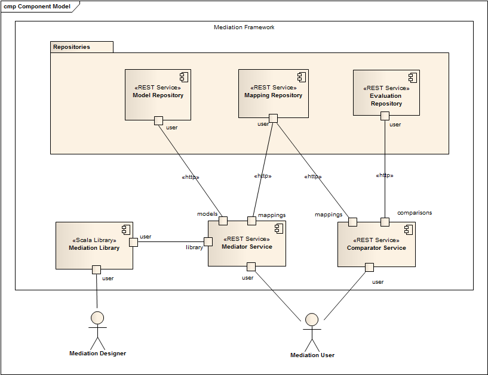

Overview of the Portal Architecture
The Mediation Portal architecture is depicted by Figure 1 below. The mediation portal is composed of three repository services storing data (i.e., models, mapping, and evaluation) and by two services manipulating these data, namely the mediator and the comparator. Each of these services will be further described in the following.

Aside of the Mediation Library, all services are REST services and can be invoked using standard HTTP requests embedding a standard JSON document. The following sections describes the various HTTP requests and JSON documents needed to use the mediation portal. Alternatively, a graphical user interface can be used for the most simple mediation cases.
A running instance of the Mediation Portal can be accessed at the following URL: http://54.247.114.191.It might be used to experiment or showcase the mediation portal.